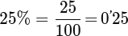

Introducción a la proporcionalidad numérica y los porcentajes
1. Magnitudes proporcionales
🔹 Magnitudes directamente proporcionales
Dos magnitudes son directamente proporcionales cuando:
- Si una aumenta, la otra también aumenta.
- Si una disminuye, la otra también disminuye.
👉 Se relacionan siempre con el mismo número.
Ejemplo:
Más cuadernos → más precio.
🔹 Magnitudes inversamente proporcionales
Dos magnitudes son inversamente proporcionales cuando:
- Si una aumenta, la otra disminuye.
- El producto de ambas es constante.
Ejemplo:
Más personas trabajando → menos tiempo.
2. Regla de tres
🔹 Regla de tres simple directa
Se usa cuando dos magnitudes son directamente proporcionales.
Cómo se resuelve:
- Se colocan los datos en una tabla.
- Se multiplica en cruz y se divide.
Ejemplo:
Si 3 entradas cuestan 15 €, 5 entradas cuestan más.
🔹 Regla de tres simple inversa
Se usa cuando las magnitudes son inversamente proporcionales.
Cómo se resuelve:
- Se mantiene constante el producto.
- Más de una → menos de la otra.
Ejemplo:
Más personas → menos días.
🔹 Regla de tres compuesta
Se utiliza cuando intervienen más de dos magnitudes.
- Compuesta directa: todas las relaciones son directas.
- Compuesta inversa: al menos una relación es inversa.
👉 Las magnitudes directas se colocan igual.
👉 Las magnitudes inversas se colocan al revés.
3. Repartos proporcionales
🔹 Repartos directamente proporcionales
Se reparte una cantidad total siguiendo una proporción dada.
Ejemplo:
Reparto en proporción 1 : 2 : 3.
🔹 Repartos inversamente proporcionales
Se reparte una cantidad al revés de la proporción dada.
Cómo se hace:
- Se calculan los inversos.
- Se reparte proporcionalmente a esos inversos.
Ejemplo:
Menos tiempo → más dinero.
4. Porcentajes
🔹 ¿Qué es un porcentaje?
Un porcentaje es una parte de 100.

Se usan para:
- Descuentos
- Subidas
- Notas
- Estadísticas
5. Aumentos y disminuciones porcentuales
🔹 Aumento porcentual
La cantidad final es mayor que la inicial.
Final = Inicial + porcentaje
🔹 Disminución porcentual
La cantidad final es menor que la inicial.
Final = Inicial − porcentaje
Ejemplo:
Un descuento del 20 % hace que el precio baje.
6. Ideas clave para estudiar 📌
- Primero piensa si la relación es directa o inversa
- Dibuja una tabla si lo necesitas
- En repartos, fíjate si es directo o inverso
- En porcentajes, recuerda que siempre se calcula sobre el valor inicial